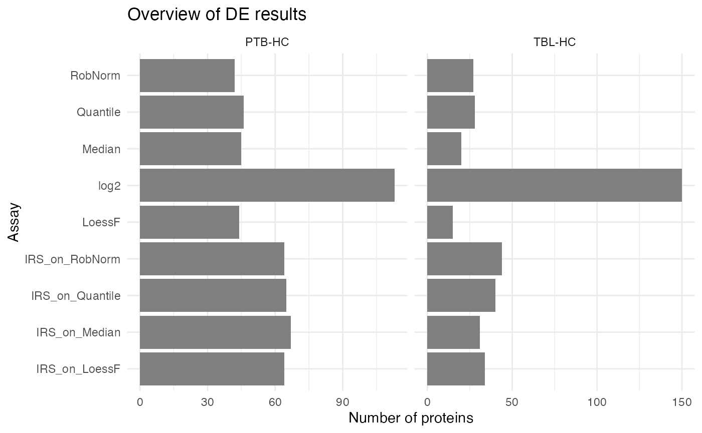
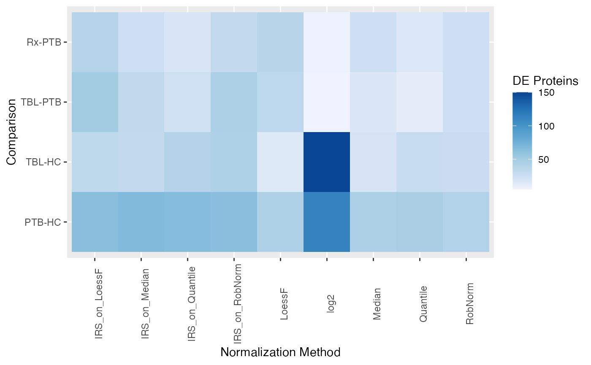
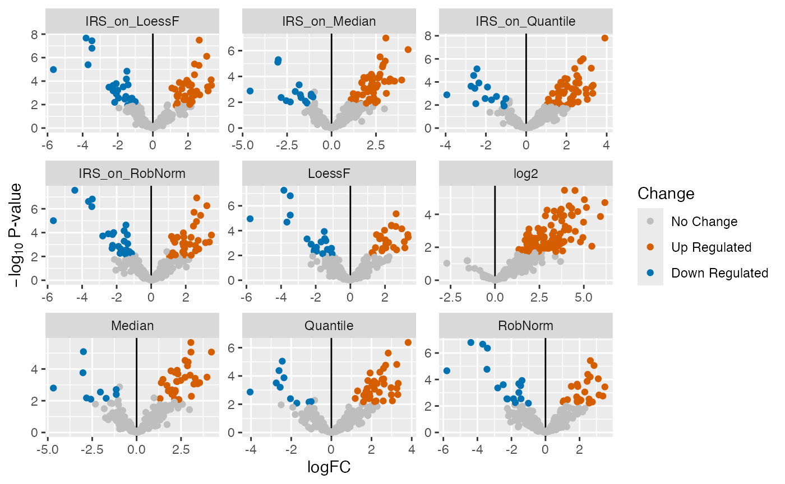
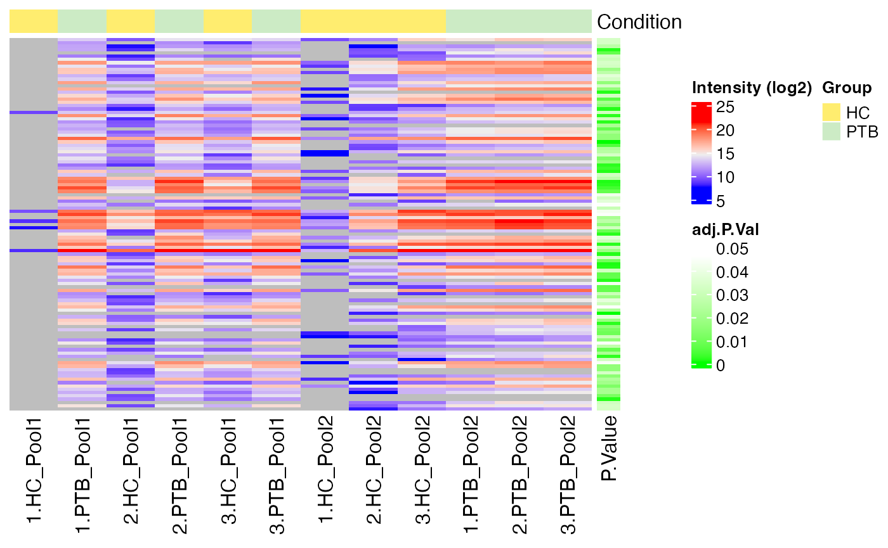
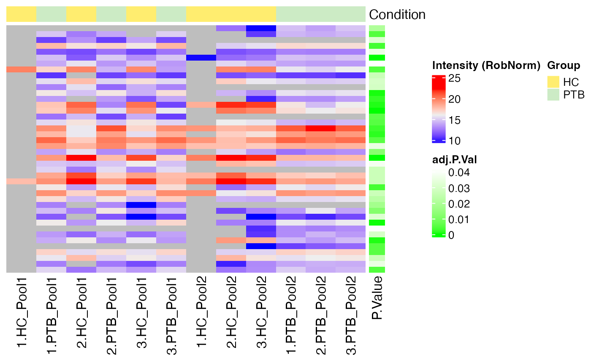
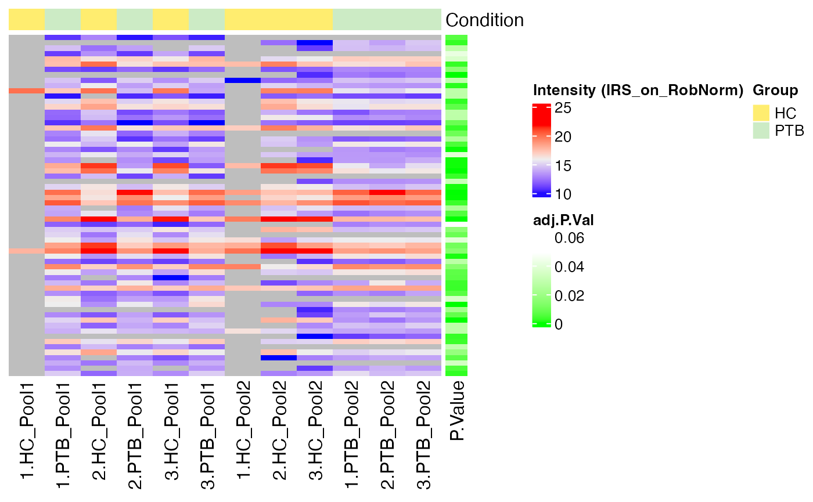
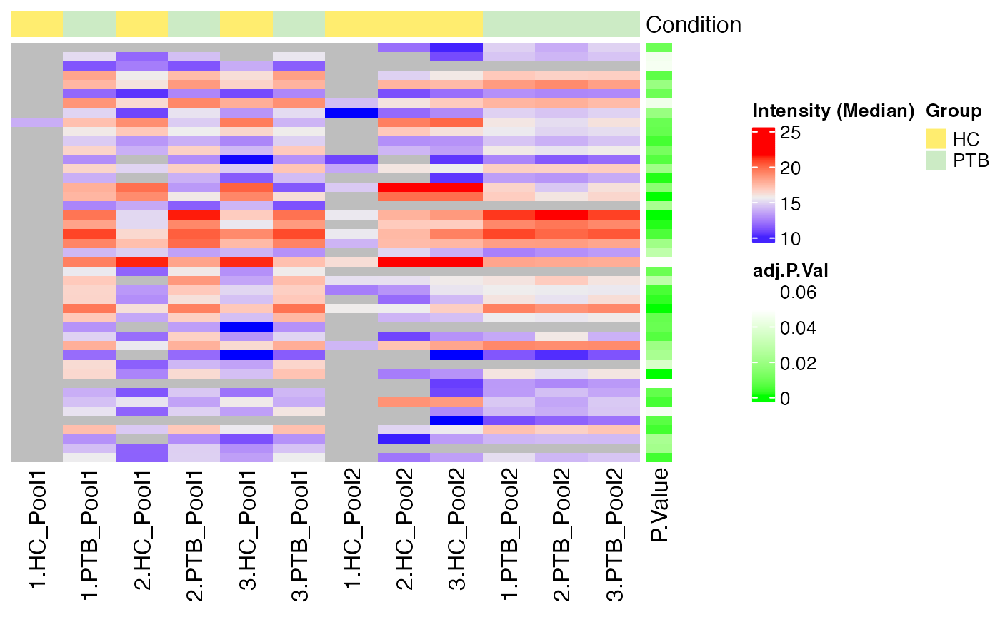
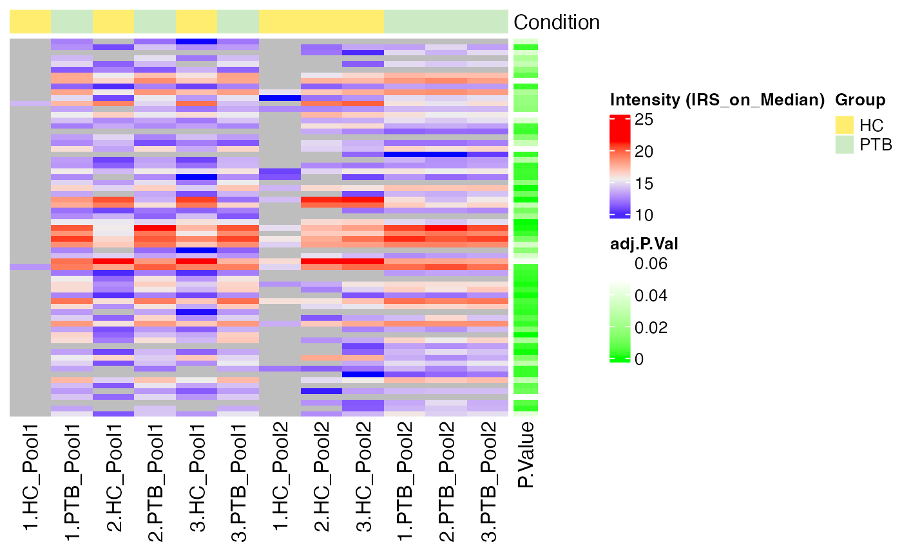
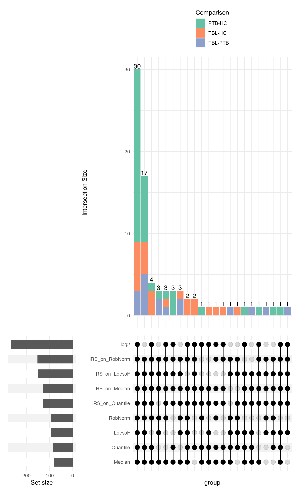
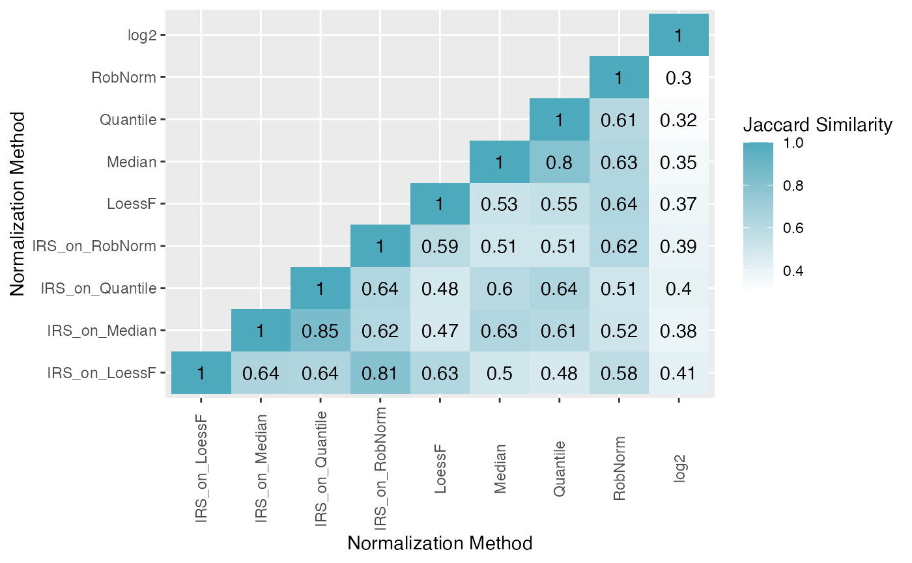

Differential Expression Analysis
Arend Lis
Source:vignettes/Differential_Expression.Rmd
Differential_Expression.RmdLoad Data (TMT)
Here, we are directly working with the SummarizedExperiment data. For more information on how to create the SummarizedExperiment from a proteomics data set, please refer to the “Get Started” vignette.
The example TMT data set originates from (Biadglegne et al. 2022).
data("tuberculosis_TMT_se")
se <- tuberculosis_TMT_seNormalize Data
In order to compare the performance of different normalization methods on their ability to detect differentially expressed proteins, we first perform a simple normalization here. For more details about how to normalize data and evaluate the normalization appraoches quantitatively and qualitatively using PRONE, please refer to the “Normalization” vignette.
se_norm <- normalize_se(se, c("IRS_on_RobNorm", "IRS_on_Median", "IRS_on_LoessF", "IRS_on_Quantile"), combination_pattern = "_on_")
#> RobNorm normalization not yet performed. Single RobNorm normalization performed now.
#> RobNorm completed.
#> IRS normalization performed on RobNorm-normalized data completed.
#> Median normalization not yet performed. Single Median normalization performed now.
#> Median completed.
#> IRS normalization performed on Median-normalized data completed.
#> LoessF normalization not yet performed. Single LoessF normalization performed now.
#> LoessF completed.
#> IRS normalization performed on LoessF-normalized data completed.
#> Quantile normalization not yet performed. Single Quantile normalization performed now.
#> Quantile completed.
#> IRS normalization performed on Quantile-normalized data completed.Differential Expression Analysis
After having performed normalization and evaluated the different normalization methods via qualitative and quantitative analysis, differential expression analysis can be used to further analyze the differences of the normalization methods.
However before, you need to remove the reference samples in case of a
TMT experiment. This can be easily done with the function
remove_reference_samples().
se_norm <- remove_reference_samples(se_norm)
#> 2 reference samples removed from the SummarizedExperiment object.Run DE Analysis
First, you need to specify the comparisons you want to perform in DE
analysis. For this, the function specifc_comparisons() was
developed which helps to build the right comparison strings. For
instance, if you are having a condition column “Condition” in your meta
data that is built upon two individual groups, such as “diabetic_3d”
referring to diabetic samples at day 3 after operation, you can simply
specify sep = “_” and the method only considers comparisons where at
least one of the group remains static.
However, you can also just simply create a vector of comparisons to ensure the correct order and handle this vector over to the DE analysis method.
comparisons <- specify_comparisons(se_norm, condition = "Group", sep = NULL, control = NULL)
comparisons <- c("PTB-HC", "TBL-HC", "TBL-PTB", "Rx-PTB")The function run_DE() performs the DE analysis on the
selected SummarizedExperiment and comparisons. DE analysis can be
performed on multiple assays (normalization methods) at once using the
already known “ain” parameter. The condition of the SummarizedExperiment
object, specified at the beginning, can be used (condition = NULL) or
any other column of the meta data can specified. Three methods are
available for DE analysis: limma (Ritchie et al.
2015), DEqMS (Zhu et al. 2020), and
ROTS (Suomi et al. 2017). The meaning of
the other parameters can be extracted from the documentation of the
method.
de_res <- run_DE(se = se_norm,
comparisons = comparisons,
ain = NULL,
condition = NULL,
DE_method = "limma",
covariate = NULL,
logFC = TRUE,
logFC_up = 1,
logFC_down = -1,
p_adj = TRUE,
alpha = 0.05,
trend = TRUE,
robust = TRUE,
)
#> Condition of SummarizedExperiment used!
#> All assays of the SummarizedExperiment will be used.
#> DE Analysis will not be performed on raw data.
#> log2: DE analysis completed.
#> RobNorm: DE analysis completed.
#> IRS_on_RobNorm: DE analysis completed.
#> Median: DE analysis completed.
#> IRS_on_Median: DE analysis completed.
#> LoessF: DE analysis completed.
#> IRS_on_LoessF: DE analysis completed.
#> Quantile: DE analysis completed.
#> IRS_on_Quantile: DE analysis completed.When running ROTS you need to specify the R and K parameters. In
DEqMS, the DEqMS_PSMs_column need to be specified. This can be any
column in the rowData(se). For more information on the
specific parameters, please refer to the method specific
documentation.
If you want to apply other logFC or p-value threshold, there is no
need to re-run the DE analysis again. With
apply_thresholds(), you can simply change the threshold
values.
new_de_res <- apply_thresholds(de_res = de_res, logFC = FALSE, p_adj = TRUE, alpha = 0.05)Visualize DE Results
Barplot
To get an overview of the DE results of the different normalization
methods, you can visualize the number of significant DE proteins per
normalization method in a barplot using
plot_overview_DE_bar(). This plot can be generated in
different ways by specifying the “plot_type” parameter:
- single: plot a single barplot for each comparison (default)
- facet_comp: facet the barplot by comparison
- stacked: stack the number of DE per comparison
- facet_regulation: stack the number of DE per comparison but facet by up- and down-regulated
plot_overview_DE_bar(de_res, ain = NULL, comparisons = comparisons, plot_type = "facet_regulation") + ggplot2::theme(legend.position = "bottom", legend.direction = "vertical")
#> All normalization methods of de_res will be visualized.
You can also just visualize two specific comparisons:
plot_overview_DE_bar(de_res, ain = NULL, comparisons = comparisons[seq_len(2)], plot_type = "facet_comp")
#> All normalization methods of de_res will be visualized.
Tile Plot
You can also get an overview of the DE results in form of a heatmap
using the plot_overview_DE_tile().
plot_overview_DE_tile(de_res)
#> All comparisons of de_res will be visualized.
#> All normalization methods of de_res will be visualized.
Volcano Plots
Another option is to generate volcano plots for each comparison. The
function plot_volcano_DE() generates a grid of volcano
plots for each normalization techniques (facet_norm = TRUE) or for each
comparison (facet_comparison = TRUE). A list of volcano plots is
returned.
plot_volcano_DE(de_res, ain = NULL, comparisons = comparisons[1], facet_norm = TRUE)
#> All normalization methods of de_res will be visualized.
#> $`PTB-HC`
Heatmap of DE Results
Furthermore, you can visualize the DE results in form of a heatmap.
The function plot_heatmap_DE() generates a heatmap of the
DE results for a specific comparison and normalization method.
plot_heatmap_DE(tuberculosis_TMT_se, tuberculosis_TMT_de_res, ain = NULL, comparison = "PTB-HC", condition = NULL, label_by = NULL, pvalue_column = "adj.P.Val")
#> All assays of the SummarizedExperiment will be used.
#> Label of SummarizedExperiment used!
#> Condition of SummarizedExperiment used!
#> <simpleError in stats::hclust(stats::dist(as.matrix(data))): NA/NaN/Inf in foreign function call (arg 10)>
#> <simpleError in stats::hclust(stats::dist(as.matrix(data))): NA/NaN/Inf in foreign function call (arg 10)>
#> <simpleError in stats::hclust(stats::dist(as.matrix(data))): NA/NaN/Inf in foreign function call (arg 10)>
#> <simpleError in stats::hclust(stats::dist(as.matrix(data))): NA/NaN/Inf in foreign function call (arg 10)>
#> <simpleError in stats::hclust(stats::dist(as.matrix(data))): NA/NaN/Inf in foreign function call (arg 10)>
#> $log2
#>
#> $RobNorm
#>
#> $IRS_on_RobNorm
#>
#> $Median
#>
#> $IRS_on_Median
Intersection Analysis of DE Results
Moreover, you can also intersect the DE results of different
normalization methods to see how many DE proteins overlap. You can
either plot for each requested comparison an individual upset plot
(plot_type = “single”) or stack the number of overlapping DE proteins
per comparison (“stacked”). Not only the upset plot(s) are returned, but
also a table with the intersections is provided by the
plot_upset_DE()function.
intersections <- plot_upset_DE(de_res, ain = NULL, comparisons = comparisons[seq_len(3)], min_degree = 6, plot_type = "stacked")
#> All normalization methods of de_res will be visualized.
# put legend on top due to very long comparisons
intersections$upset[[2]] <- intersections$upset[[2]] + ggplot2::theme(legend.position = "top", legend.direction = "vertical")
intersections$upset
Additionally, the Jaccard similarity index can be calculated to quantify the similarity of the DE results between the different normalization methods. A individual heatmap can be generated for each comparison (“plot_type = single”), a single heatmap facetted by comparison (“facet_comp”) or a single heatmap taking all comparisons into account (“all”) can be generated.
plot_jaccard_heatmap(de_res, ain = NULL, comparisons = comparisons, plot_type = "all")
#> All normalization methods of de_res will be visualized.
PRONE offers the functionality to extract a consensus set of DEPs
based on a selection of normalization methods and a threshold for the
number of methods that need to agree on the DE status of a protein. The
function get_consensus_DE() returns a list of consensus DE
proteins for either each comparison separately or for all comparisons
combined.
DT::datatable(extract_consensus_DE_candidates(de_res, ain = NULL, comparisons = comparisons, norm_thr = 0.8, per_comparison = TRUE), options = list(scrollX = TRUE))Session Info
utils::sessionInfo()
#> R version 4.4.0 (2024-04-24)
#> Platform: x86_64-apple-darwin20
#> Running under: macOS Ventura 13.6
#>
#> Matrix products: default
#> BLAS: /Library/Frameworks/R.framework/Versions/4.4-x86_64/Resources/lib/libRblas.0.dylib
#> LAPACK: /Library/Frameworks/R.framework/Versions/4.4-x86_64/Resources/lib/libRlapack.dylib; LAPACK version 3.12.0
#>
#> locale:
#> [1] en_US.UTF-8/en_US.UTF-8/en_US.UTF-8/C/en_US.UTF-8/en_US.UTF-8
#>
#> time zone: Europe/Luxembourg
#> tzcode source: internal
#>
#> attached base packages:
#> [1] stats graphics grDevices datasets utils methods base
#>
#> other attached packages:
#> [1] PRONE_0.99.1
#>
#> loaded via a namespace (and not attached):
#> [1] rlang_1.1.3 magrittr_2.0.3
#> [3] GetoptLong_1.0.5 clue_0.3-65
#> [5] matrixStats_1.3.0 compiler_4.4.0
#> [7] reshape2_1.4.4 png_0.1-8
#> [9] systemfonts_1.1.0 vctrs_0.6.5
#> [11] stringr_1.5.1 ProtGenerics_1.35.4
#> [13] shape_1.4.6.1 pkgconfig_2.0.3
#> [15] crayon_1.5.2 fastmap_1.1.1
#> [17] XVector_0.43.1 labeling_0.4.3
#> [19] utf8_1.2.4 rmarkdown_2.26
#> [21] UCSC.utils_0.99.7 preprocessCore_1.65.0
#> [23] ragg_1.3.0 purrr_1.0.2
#> [25] xfun_0.43 MultiAssayExperiment_1.29.1
#> [27] zlibbioc_1.49.3 cachem_1.0.8
#> [29] GenomeInfoDb_1.39.14 jsonlite_1.8.8
#> [31] highr_0.10 DelayedArray_0.29.9
#> [33] BiocParallel_1.37.1 parallel_4.4.0
#> [35] cluster_2.1.6 R6_2.5.1
#> [37] RColorBrewer_1.1-3 stringi_1.8.3
#> [39] bslib_0.7.0 ComplexUpset_1.3.3
#> [41] limma_3.59.10 GenomicRanges_1.55.4
#> [43] jquerylib_0.1.4 iterators_1.0.14
#> [45] Rcpp_1.0.12 SummarizedExperiment_1.34.0
#> [47] knitr_1.46 IRanges_2.37.1
#> [49] splines_4.4.0 Matrix_1.7-0
#> [51] igraph_2.0.3 tidyselect_1.2.1
#> [53] rstudioapi_0.16.0 abind_1.4-5
#> [55] yaml_2.3.8 ggtext_0.1.2
#> [57] doParallel_1.0.17 codetools_0.2-20
#> [59] affy_1.81.0 lattice_0.22-6
#> [61] tibble_3.2.1 plyr_1.8.9
#> [63] withr_3.0.0 Biobase_2.63.1
#> [65] evaluate_0.23 desc_1.4.3
#> [67] xml2_1.3.6 circlize_0.4.16
#> [69] pillar_1.9.0 affyio_1.73.0
#> [71] BiocManager_1.30.22 MatrixGenerics_1.15.1
#> [73] DT_0.33 renv_1.0.7
#> [75] foreach_1.5.2 stats4_4.4.0
#> [77] MSnbase_2.30.1 MALDIquant_1.22.2
#> [79] ncdf4_1.22 generics_0.1.3
#> [81] S4Vectors_0.42.0 ggplot2_3.5.1
#> [83] munsell_0.5.1 scales_1.3.0
#> [85] glue_1.7.0 lazyeval_0.2.2
#> [87] tools_4.4.0 data.table_1.15.4
#> [89] mzID_1.41.0 QFeatures_1.13.7
#> [91] vsn_3.71.1 mzR_2.37.3
#> [93] fs_1.6.4 XML_3.99-0.16.1
#> [95] grid_4.4.0 impute_1.77.0
#> [97] tidyr_1.3.1 crosstalk_1.2.1
#> [99] MsCoreUtils_1.15.7 colorspace_2.1-0
#> [101] patchwork_1.2.0 GenomeInfoDbData_1.2.12
#> [103] PSMatch_1.7.2 cli_3.6.2
#> [105] textshaping_0.3.7 fansi_1.0.6
#> [107] S4Arrays_1.3.7 ComplexHeatmap_2.20.0
#> [109] dplyr_1.1.4 AnnotationFilter_1.27.0
#> [111] pcaMethods_1.95.0 gtable_0.3.5
#> [113] sass_0.4.9 digest_0.6.35
#> [115] BiocGenerics_0.49.1 SparseArray_1.3.5
#> [117] rjson_0.2.21 farver_2.1.1
#> [119] htmlwidgets_1.6.4 memoise_2.0.1
#> [121] htmltools_0.5.8.1 pkgdown_2.0.9
#> [123] lifecycle_1.0.4 httr_1.4.7
#> [125] GlobalOptions_0.1.2 statmod_1.5.0
#> [127] gridtext_0.1.5 MASS_7.3-60.2